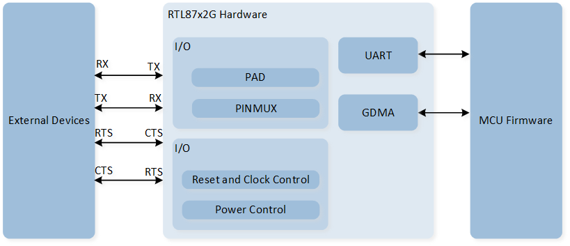
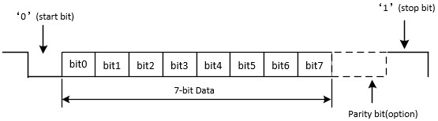
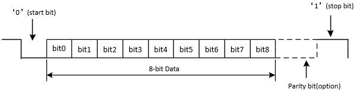
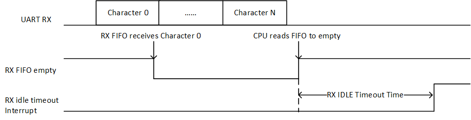

UART
示例列表
本章介绍 UART 示例的详细信息。RTL87x2G 为 UART 外设提供以下示例。
功能概述
UART 提供了一种与外部设备进行全双工数据交换的灵活方法。 UART 使用分数波特率生成器来提供多种波特率选项。 它支持半双工单线通信。UART 还可以与 GDMA 配合使用，以实现高速数据通信。
特性列表
支持 1-bit 和 2-bit 停止位。
支持 7-bit 和 8-bit 数据格式。
支持奇偶校验位。
支持硬件流控。
可编程波特率。
支持 GDMA 。
支持单线 UART。
备注
UART0 为 HCI UART，UART1 为 LOG UART，在使用 UART 外设时需要注意避免资源冲突。
系统框图
UART 的系统框图如下图所示。通过 MCU Firmware 固件实现 UART TX/RX 数据等功能，通过 UART 外设实现数据的封装与解析，Hardware 通过 TX/RX 进行数据交互，实现数据的通信。

UART 系统框图
数据格式
7 位数据格式的示意图如下图所示。

7 位数据格式示意图
8 位数据格式的示意图如下图所示。

8 位数据格式示意图
奇偶校验位
奇校验
奇校验意味着数据位和校验位中 '1' 的数量是奇数。当数据位中 '1' 的数量是奇数时，校验位为 '0'；否则，校验位为 '1'。
偶校验
偶校验意味着数据位和校验位中的 '1' 的数量是偶数。当数据位中的 '1' 的数量是偶数时，校验位为 '0'；否则为 '1'。
硬件流控制
硬件流控制的示意图如下图所示。

硬件流控制示意图
RTS 流控制
当 UART 接收端准备好接收新数据时，RTS 变为有效（低电平有效）。当 RX FIFO 中的数据数量达到设定的 RX 触发电平时，RTS 变为无效（高电平无效），从而指示希望在当前帧结束时停止数据传输。
CTS 流控制
发送端在发送下一帧之前检查 CTS。如果 CTS 有效（低电平有效），则发送下一个数据；否则，不发送下一帧数据。如果在传输过程中 CTS 变为无效（高电平无效），则在当前传输完成后停止传输。
波特率
通过配置变量 UART_InitTypeDef::UART_Div、 UART_InitTypeDef::UART_Ovsr 和 UART_InitTypeDef::UART_OvsrAdj 来设置波特率。
在不同数据格式下，UART 的波特率设置会有所不同。具体的波特率参数设置详见 UART_SetBaudRate() 中的注释说明。
UART 中断
UART 的中断配置与中断检查主要分为两部分：一部分可以通过直接检查对应的中断标志位 Flag 判断对应中断是否发生，另一部分需要通过调用 UART_GetIID() 读取中断 ID 信息进行判别。
UART 中断的相关介绍如下表所示：
Interrupt |
Trigger Condition |
Interrupt ID |
Flag Status |
How to Clear |
|---|---|---|---|---|
RX FIFO is not empty or RX FIFO level reached RX FIFO threshold. |
|
Reading UART RX FIFO until RX FIFO is empty or is below threshold. |
||
There's at least 1 UART data in the RX FIFO but no character has been input to the RX FIFO or read from it for the last time of 4 characters. |
|
Reading UART RX FIFO until RX FIFO is empty. |
||
An overrun error will occur only after the FIFO is full and the next character has been completely received in the shift register. |
|
Read REG_LSR register. (Call API |
||
When the data is read out from RX FIFO, Hardware will check data parity bit. If the parity check is failed, it will trigger Receiver Line Status interrupt. |
||||
When the data is read out from RX FIFO, Hardware will check data frame. If the frame check is failed, it will trigger Receiver Line Status interrupt. |
||||
Whenever the received data input is held in the Spacing (logic 0) state for a longer than a full word transmission time, it will trigger Receiver Line Status interrupt. |
||||
TX FIFO empty. |
|
Writing to the TX FIFO Transmitter Holding Register (UART_RBR_THR) or reading REG_IIR (Call API |
||
TX shift register empty and TX FIFO empty, indicates the TX waveform finish. |
- |
Read REG_TXDONE_INT register. (Call API |
||
TX FIFO level is less than or equal to TX FIFO threshold. |
- |
Writing to the TX FIFO Transmitter Holding Register (UART_RBR_THR) until TX FIFO level is above TX FIFO threshold. |
||
No data is received in RX idle timeout time after the RX FIFO is empty (data is received before). |
- |
Writing '1' to REG_RX_TIMEOUT_STS. (Call API |
UART 中断补充说明
中断 ID 通过
UART_GetIID()进行获取。其中每个中断 ID 都有对应的优先级。在高优先级中断被清除之前，无法读取低优先级中断 ID 。优先级排名：1 > 2 > 3 > 4。由于部分中断标志位在读取寄存器后就会清除，因此在获取中断 ID 时建议将值进行保存。
TX 中断的对比说明：
UART_INT_TX_FIFO_EMPTY：当 TX FIFO 为空时会触发该中断。UART_INT_TX_THD：当 TX FIFO 中的数据数量小于或等于设置的 TX threshold level，会触发该中断。UART_INT_TX_DONE：当 TX FIFO 为空且 TX Shift Register 也为空，代表此时 UART 的 TX 波形输出完毕。
RX 中断对比说明
Receiver Timeout Interrupt
Receiver Timeout Interrupt 通过配置 UART_INT_RD_AVA 中断，读取中断 ID UART_INT_ID_RX_DATA_TIMEOUT 进行检查。
RX FIFO 中至少应有 1 个 UART 数据，但在 4 个 Characters 的时间后，没有数据被存入 RX FIFO 且没有数据被读出时，则会触发该中断。
Character = start bit + data bits + parity bit + stop bits。
例如，设置波特率 115200，7 位数据，有校验位，1 位停止位。此时 4 Characters time = 1/112500 * (1+7+1+1) * 4 = 347.23us。

UART Receiver Timeout Interrupt Diagram
RX IDLE Timeout Interrupt
RX IDLE Timeout Interrupt 通过配置 UART_INT_RX_IDLE 中断，读取 UART_FLAG_RX_IDLE 标志位进行检查。
在 RX FIFO 为空（之前已接收到数据）后，如果在 RX 空闲超时时间内没有接收到数据，则会触发该中断。其中空闲超时时间通过 UART_InitTypeDef::UART_IdleTime 进行设置。
{kind=link}

RX IDLE Timeout Interrupt Diagram
UART GDMA
UART GDMA TX
在 UART 传输过程中，当 TX FIFO 内数据的数量小于或等于初始化中设置的 UART_InitTypeDef::UART_TxWaterLevel 值时，会触发一次 GDMA burst 搬运。
GDMA 一次 burst 会将 GDMA_InitTypeDef::GDMA_DestinationMsize 个数据写入 UART TX FIFO 中。

UART GDMA TX 示意图
UART GDMA RX
在 UART 传输过程中，当 RX FIFO 内数据的数量大于或等于初始化中设置的 UART_InitTypeDef::UART_RxWaterLevel 时，会触发一次 GDMA burst 搬运。
GDMA 一次 burst 会从 UART RX FIFO 中获取 GDMA_InitTypeDef::GDMA_SourceMsize 个数据。

UART GDMA RX 示意图